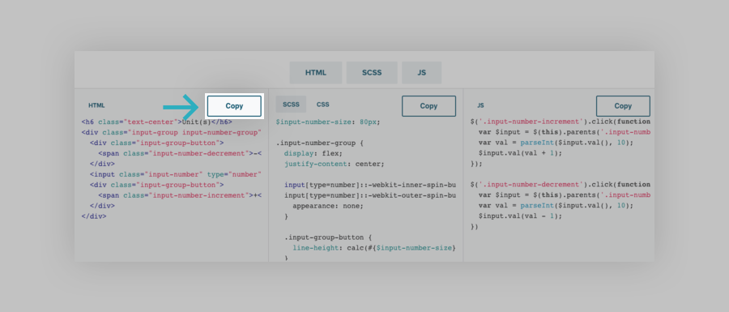
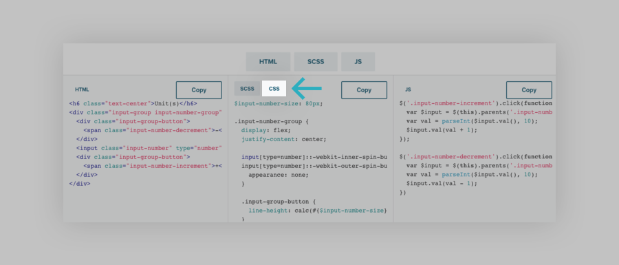
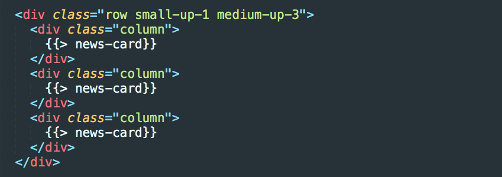

How to use and submit patterns
Patterns are coded UI components designed to be dropped into projects. The intent of patterns are to solve common patterns, scaffold faster, and integrate with your existing styles right out of the box.
What are patterns?
Patterns are:
- HTML, CSS, and JS snippets
- Lightly styled components
- Easy to extend or customize
- Common solutions to layout or component challenges
Patterns are NOT:
- Templates
- Themes
- Overly stylized
- Code that does not integrate with EBI Visual Framework
How to use a pattern
Patterns are easy to use in your projects whether you’re using a CSS version or the powerful ZURB Stack. Below, we’ve outlined how to get a pattern into your project in a snap and build faster.
(Option A) Copy it
Like a pattern? You can copy the HTML and CSS/SCSS and JS (if applicable) from the pattern detail page. You’ll see a responsive preview and description at the top of the page. Below the preview you’ll find the code for the component.
You can copy the the code from each code container using the handy copy button.
If you are using CSS vs SCSS, you can toggle to the compiled CSS using this handy toggle:
(Option B) Download an individual pattern
You can can download the files needed for the pattern. Click the download button and you’ll get:
- Individual HTML files
- Individual CSS files for each
- Individual SCSS files in case you want to manually add them to a Sass project
- Individual JS files (if applicable)
Dependencies
Patterns are made to drop into any EBI Visual Framework project and work. Therefore Foundation is a dependency (needs it to work as expected). You'll also want to check you're using a corresponding and compatible version of the EBI Visual Framework.
How do I submit a pattern?
All are welcome to contribute patterns. Submissions are made through GitHub, with pull requests — or they can be e-mailed to <a class="external "href="mailto:www-dev@ebi.ac.uk">www-dev@ebi.ac.uk
(Step 1) Install the prerequistes:
- Clone or download the repo from https://github.com/ebiwd/EBI-Style-lab
- Navigate to the repo
npm installbower installnpm start- This will start the build system and watch for changes. When you save a change, the browser preview will refresh automatically.
(Step 2) Create a New Branch:
Create a branch from which to submit your pattern from. This will allow you to submit a Pull Request when you’re done so that the Foundation team can review it, offer suggestions and merge it in.
In your terminal, checkout a new branch
git checkout -b your-branch-name
(Step 3) Create a New, Unique Folder:
- Navigate to the collection of patterns
cd content/websites/patterns/ - Create a new folder in the patterns folder. Name it the name of your pattern, a la
image-gallery- avoid using terms that describe the look and instead focus on what the thing does
(Step 4) Make and fill in your files:
Tip: Grab the template
There's a template pattern you copy-paste to get started. See the files on GitHub or download it as a ZIP
There are just a few simple files needed to submit your pattern. All your files in the folder will have the same root name.
content/websites/patterns/image-gallery/image-gallery/image-gallery.html- Every pattern will need an HTML file to demonstrate the uniqueness of the component or layout.
image-gallery/image-gallery.scss(optional)- You’ll add your custom styles in a SCSS file. You only need your additional styles as Foundation is already being imported for you. SCSS files accept CSS or SCSS so you can format it either way.
image-gallery/image-gallery.js(optional)- If your component uses custom JavaScript/jQuery you’ll create a JS file and add it there. Again, Foundation JS and jQuery are already included, so only your custom JS is needed if you used any.
image-gallery/image-gallery.png- A preview image of your pattern. This will give people context on what the pattern is!
- Open your favorite image editing program
- Make an artboard with dimensions of 370x255, and set the background to the color to
#E6E8EB - Import the screenshot you took, and do your best to center it
- Scale the screenshot as needed
- Be sure to save as a PNG
image-gallery/image-gallery.yml- You’ll want to describe your pattern and submit your name. A Yaml file uses a
.ymlfile extension and is where the pattern name, description, tags and more are stored. - Make sure to add meaningful tags. Tags are important for many reasons, they not only tell people about the patterns but also help find others like it. Some examples: image, gallery, photos, captions, interactive.
- You’ll want to describe your pattern and submit your name. A Yaml file uses a
image-gallery/layout.html(advanced, optional)- The pattern should a stand-alone component that comes with no extra grid markup or containers. You can use an optional layout file to display the Blocks in a nicer way.
- See guidance below
Optional Layout HTML file
If needed, patterns can have an optional layout file that helps you display your patterns preview in a certain way, repeat the component, or inside a container. For example, our Article Card is one single card that fills the width of the container it's in. In order to keep it to a certain width and to repeat it several times without adding a ton of markup to the Article Card itself, we'll add a layout.html file.
Create a layout.html file inside your patterns folder. So for our example, it will go in the article-card folder.
Example:
Here we used a Block Grid and included our pattern 3 times, one for each column. You can use the Panini handlebars include like this or paste the HTML in.
(Step 5) Save and preview:
As you save the pattern will be automatically compiled and inserted to the gallery; Example URL: http://localhost:8000/websites/patterns/image-gallery.html
(Step 6) Submit:
Now it’s time to submit your pattern. Make sure to add and commit your work. Then submit your Pull Request.
Review Process
Once you submit your pattern pull request, a member of the team will review it to add it in.